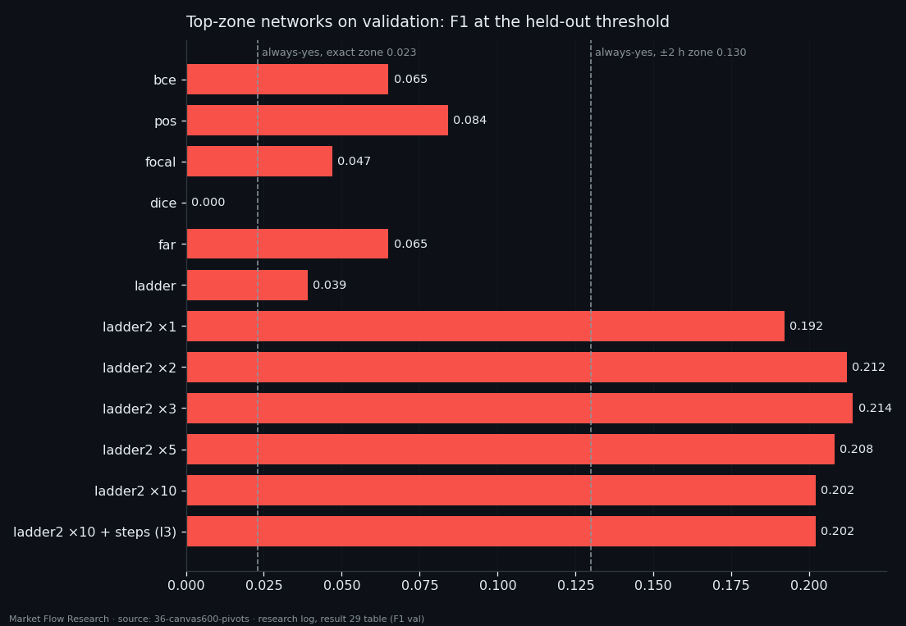

Teaching the Network to See Tops — Sell Pivots on BTC, One Change and Eighteen Training Runs
The bottom-finding network that powers our buy-only bot was rebuilt for the other side of the market with exactly one change: the label is now a 2.3% top zone instead of a bottom zone. Same canvas, same split, same eighteen training runs with different loss functions. Tops turned out to be rarer and harder: on validation only 62 of 5,265 ten-minute steps sit in a top zone. Plain losses reached an F1 of 0.047–0.084 against a base of 0.023; the "ladder" target that accepts a two-hour neighbourhood reached 0.19–0.21 against 0.13. Fine-tuning further did not help, and one loss never fired at all.
① One change: the label is a top
The study was asked to repeat every step of the bottom work "as precisely as possible, changing one thing". So the canvas — 1,100 records of 100 seconds, 8 order-book features, about 30 hours — is byte-for-byte the input of the bottom network. The split is the same: training 21.02–30.06 (15,878 steps every 10 minutes), a 200-hour gap, held-out 08.07–12.08 (4,445 steps), validation 15.08–21.09 (5,265 steps), all BTC.
The label mirrors the bottom label. A top is a 2.3% zigzag pivot where at least one of its two legs lasts 7 hours or more; the zone is ±5% of the incoming leg's duration around it, and only where price is within 10% of the leg's move from the top. Training has 66 tops (279 steps in zone); held-out 6 tops (123 steps); validation 12 tops (62 steps). That is about one step in eighty-five on validation — a very thin target.

② Eighteen runs: plain losses barely see tops, the ladder sees more
The networks are trained from scratch with four losses — binary cross-entropy (`bce`), positively weighted (`pos`), `focal` and `dice` — and then fine-tuned from the chosen `bce` epoch with distance-aware losses: `far`, `ladder`, and `ladder2`, which counts a hit anywhere within ±2 hours of the zone, with ten different "silence" weights. The epoch is picked on held-out data by F1 at the best threshold.
Among plain losses, `pos` is best both on held-out (F1 0.141, base 0.054) and on validation: average precision 0.056 against a zone frequency of 0.012, AUC 0.787, F1 0.084 — 3.7 times the always-yes answer, but it still raises 800 alarms on validation for 62 zone steps. The `ladder2` family reaches F1 0.187–0.214 on validation with precision 0.15–0.19: about one alarm in six lands within two hours of a top. Those numbers are measured on the wider ±2-hour target, so they are not directly comparable with the plain ones.

③ What did not work — and why that matters for the bot
The study's own verdict is blunt. The top-ranked run on held-out, `l3`, is its epoch 0 — the weights it started from (`ladder2 ×10`, epoch 25). Training it further on a ladder of 2 to 37 steps changed nothing. `far` likewise stayed on its starting point. `dice` produced no signal at all on held-out or validation. The useful information came from the first two rounds.
Tops are harder than bottoms here for a simple reason visible in the data: there are fewer of them that last, and validation, a month in which BTC rose about 29%, had only twelve. A network that is right one time in six still needs a filter before it can trade. That filter is the subject of the next two articles: instead of trusting one threshold, the sell signal becomes a sum of probabilities over a window, and the window and threshold are picked where the result is stable, not where it peaks.
Reproduce this study
- Research log (.md, Ukrainian): goal, data, plan, scripts, every confirmed stage and table — enough to rerun the study
- Reproduction kit (.zip): the study's scripts, project rules and base scripts that build every class
If this changed how you read the tape, the natural next step is Volume Is the Fuel — Not the Steering Wheel — We recorded the Binance order book every second for six coins over five months and ran eighteen tests on what volume really does.
Volume Is the Fuel — Not the Steering Wheel
We recorded the Binance order book every second for six coins over five months and ran eighteen tests on what volume really does.
About Market Research Lab — What We Collect and Why
Most market commentary is storytelling.
From Calm to Calm: a Standard for What Counts as a Signal (BTC)
We stopped defining market signals with a stopwatch.
The Wall That Goes Quiet: What Resting Liquidity Predicts
We measured resting limit liquidity sitting on both sides of the book second by second across six coins, and asked the only question that matters:….
Comments
Discussion is powered by GitHub. Enable it by adding secrets/giscus.json (repo IDs from giscus.app).